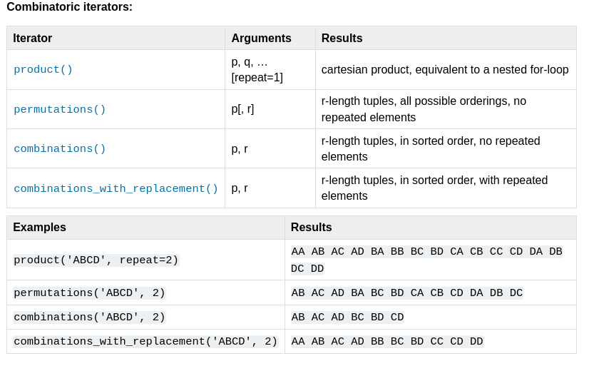

Beyond the basics
with Advent of Code
Karolina Surma PyLadies Czech Republic

Python, Excel or Minecraft?
input data -> algorithm -> the result
algorithm optimization for the 2nd puzzle
>>> from math import pi
>>> from turtle import forward, left, right
>>> import this
# position: tuple (x, y) - dictionary key
# luminosity: number value
octo_field = {(0, 0): 6, (1, 0): 3, ..., (9, 9): 8}
# who are the neighbors of the octopus sitting on
# (3, 4)?
# x + offset_x, y + offset_y
neighbor_offsets = [
(-1, -1), (-1, 0), (-1, 1),
(0, -1), (0, 1),
(1, 1), (1, 0), (1, -1),
]
3D (x, y, z) |
26 neighbors |
4D (x, y, z, w) |
80 neighbors |
😭
There has to be better way!
from itertools import product
There has to be better way!
from collections import Counterclass collections.Counter([iterable-or-mapping]) most_common([n]) Return a list of the n most common elements. total() Compute the sum of the counts.
>>> from collections import Counter
>>> lanternfish = {0: 45, 1: 235, 2: 534, 19: 3,}
>>> c = Counter(lanternfish)
>>> c.total()
817
>>> c.most_common(1)
[(2, 534)]
>>> c[20]
0
mem[45673] = 370803
mem[322] = 92667525
# mem[45673] = 370803
>>> left = line[line.index("[")+1:line.index("]")]
>>> right = line[line.index("=")+2:]
import re
"Regular Expression HOWTO"
https://docs.python.org/3/howto/regex.html#regex-howto
# mem[45673] = 370803
>>> left = line[line.index("[")+1:line.index("]")]
>>> right = line[line.index("=")+2:]
# vs
>>> pattern = r"mem\[(\d+)\] = (\d+)"

itertools
collections
re
https://befeleme.github.io/pycon-na-24/
Sources
octopus - mindful_meerkat, source: reddit
animals - storebukkebruse, license: CC BY 2.0
fish - Jean Wimmerlin, license: Unsplash
burgundy patterns - webtreats, license: CC BY 2.0
regular expressions - XKCD, license: CC BY-NC 2.5
background - intro slide - Annie Spratt, license: Unsplash